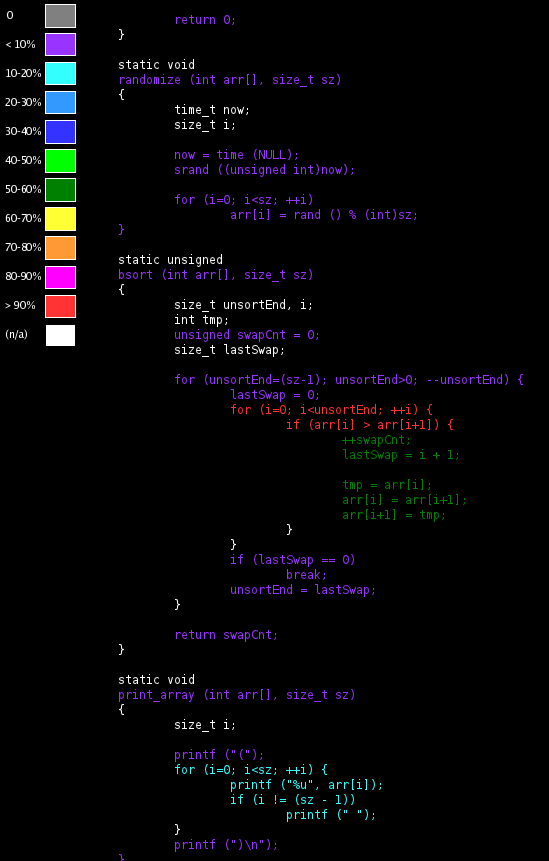

Chapter 4. Gcov
Gcov:
is a tool you can use in conjunction with GCC to test code coverage in your programs
To obtain coverage analysis of the execution of some code you must follow a couple steps. First, when compiling your code you need to add two additional flags, -fprofile-arcs and -ftest-coverage, to the compile line. Then, when the resulting binary is run, coverage data is collected and stored in a binary file. If you post-process this data with the gcov tool you obtain a line-by-line break-down of how often each line within the original source file was executed (or not) by the preceeding execution.
First edit the Makefile to add the necessary flags:
.PHONY: all clean ALL = bsort CFLAGS = -fprofile-arcs -ftest-coverage 5 all: $(ALL) clean:: $(RM) $(ALL) |
...and compile:
$ make cc -fprofile-arcs -ftest-coverage bsort.c -o bsort |
If we have a look at the files in the current directory:
$ ls Makefile bsort bsort.c bsort.gcno |
...we find an unknown file: bsort.gcno. This file was generated by the build and is what helps associate the executing code back to specific line numbers in the original source.
Now run the program:
$ ./bsort start: (31 22 0 31 2 23 23 17 3 15 11 0 25 21 1 0 5 9 23 12 13 14 25 3 19 14 15 31 22 16 18 21) end: (0 0 0 1 2 3 3 5 9 11 12 13 14 14 15 15 16 17 18 19 21 21 22 22 23 23 23 25 25 31 31 31) swaps: 224 |
When we look at the directory's contents:
$ ls Makefile bsort bsort.c bsort.gcda bsort.gcno |
...the ./bsort binary that was run has created another file: bsort.gcda. This file contains all the coverage data counts from having run the program. Unfortunately this file is in binary:
$ file bsort.gcda bsort.gcda: data |
The gcov tool is used to convert this data into something that is (more) human readable:
$ gcov bsort.c File 'bsort.c' Lines executed:100.00% of 38 bsort.c:creating 'bsort.c.gcov' |
Here's what bsort.c.gcov looks like:
-: 0:Source:bsort.c
-: 0:Graph:bsort.gcno
-: 0:Data:bsort.gcda
-: 0:Runs:1
-: 0:Programs:1
-: 1:/*
-: 2: * Copyright (C) 2011 Trevor Woerner
-: 3: */
-: 4:
-: 5:#include <stdio.h>
-: 6:#include <stdlib.h>
-: 7:#include <time.h>
-: 8:
-: 9:#define ARRSZ 32
-: 10:
-: 11:static void randomize (int arr[], size_t sz);
-: 12:static unsigned bsort (int arr[], size_t sz);
-: 13:static void print_array (int arr[], size_t sz);
-: 14:
-: 15:int
1: 16:main (void)
-: 17:{
-: 18: static int arr[ARRSZ];
-: 19: unsigned swaps;
-: 20:
1: 21: randomize (arr, ARRSZ);
-: 22:
1: 23: printf ("start: ");
1: 24: print_array (arr, ARRSZ);
-: 25:
1: 26: swaps = bsort (arr, ARRSZ);
-: 27:
1: 28: printf (" end: ");
1: 29: print_array (arr, ARRSZ);
-: 30:
1: 31: printf ("swaps: %u\n", swaps);
-: 32:
1: 33: return 0;
-: 34:}
-: 35:
-: 36:static void
1: 37:randomize (int arr[], size_t sz)
-: 38:{
-: 39: time_t now;
-: 40: size_t i;
-: 41:
1: 42: now = time (NULL);
1: 43: srand ((unsigned int)now);
-: 44:
33: 45: for (i=0; i<sz; ++i)
32: 46: arr[i] = rand () % (int)sz;
1: 47:}
-: 48:
-: 49:static unsigned
1: 50:bsort (int arr[], size_t sz)
-: 51:{
-: 52: size_t unsortEnd, i;
-: 53: int tmp;
1: 54: unsigned swapCnt = 0;
-: 55: size_t lastSwap;
-: 56:
18: 57: for (unsortEnd=(sz-1); unsortEnd>0; --unsortEnd) {
18: 58: lastSwap = 0;
387: 59: for (i=0; i<unsortEnd; ++i) {
369: 60: if (arr[i] > arr[i+1]) {
224: 61: ++swapCnt;
224: 62: lastSwap = i + 1;
-: 63:
224: 64: tmp = arr[i];
224: 65: arr[i] = arr[i+1];
224: 66: arr[i+1] = tmp;
-: 67: }
-: 68: }
18: 69: if (lastSwap == 0)
1: 70: break;
17: 71: unsortEnd = lastSwap;
-: 72: }
-: 73:
1: 74: return swapCnt;
-: 75:}
-: 76:
-: 77:static void
2: 78:print_array (int arr[], size_t sz)
-: 79:{
-: 80: size_t i;
-: 81:
2: 82: printf ("(");
66: 83: for (i=0; i<sz; ++i) {
64: 84: printf ("%u", arr[i]);
64: 85: if (i != (sz - 1))
62: 86: printf (" ");
-: 87: }
2: 88: printf (")\n");
2: 89:}
|
The output contains 3 main columns separated by colons:
A count of the number of times the given line was executed. A - indicates a line with no executable code (e.g. a declaration).
The line number.
The code.
 | The specific number of times each line is executed, especially in the bsort() function, depends on the initial data, which is random. Therefore the numbers you get are likely to be slightly different than what is shown here. gcov added a header at the start of the output which isn't part of the original code. Notice in the header that a count of the number of runs is given. More runs accumulates more data. To reset, simply delete the *.gcda file before running the binary again. |
Personally I prefer to provide the -b option to gcov so that it will also report on the number of times various branches are taken.
$ gcov -b bsort.c File 'bsort.c' Lines executed:100.00% of 38 Branches executed:100.00% of 14 Taken at least once:92.86% of 14 Calls executed:100.00% of 14 bsort.c:creating 'bsort.c.gcov' |
This produces a slightly more verbose output:
-: 0:Source:bsort.c
-: 0:Graph:bsort.gcno
-: 0:Data:bsort.gcda
-: 0:Runs:1
-: 0:Programs:1
-: 1:/*
-: 2: * Copyright (C) 2011 Trevor Woerner
-: 3: */
-: 4:
-: 5:#include <stdio.h>
-: 6:#include <stdlib.h>
-: 7:#include <time.h>
-: 8:
-: 9:#define ARRSZ 32
-: 10:
-: 11:static void randomize (int arr[], size_t sz);
-: 12:static unsigned bsort (int arr[], size_t sz);
-: 13:static void print_array (int arr[], size_t sz);
-: 14:
-: 15:int
function main called 1 returned 100% blocks executed 100%
1: 16:main (void)
-: 17:{
-: 18: static int arr[ARRSZ];
-: 19: unsigned swaps;
-: 20:
1: 21: randomize (arr, ARRSZ);
call 0 returned 100%
-: 22:
1: 23: printf ("start: ");
call 0 returned 100%
1: 24: print_array (arr, ARRSZ);
call 0 returned 100%
-: 25:
1: 26: swaps = bsort (arr, ARRSZ);
call 0 returned 100%
-: 27:
1: 28: printf (" end: ");
call 0 returned 100%
1: 29: print_array (arr, ARRSZ);
call 0 returned 100%
-: 30:
1: 31: printf ("swaps: %u\n", swaps);
call 0 returned 100%
-: 32:
1: 33: return 0;
-: 34:}
-: 35:
-: 36:static void
function randomize called 1 returned 100% blocks executed 100%
1: 37:randomize (int arr[], size_t sz)
-: 38:{
-: 39: time_t now;
-: 40: size_t i;
-: 41:
1: 42: now = time (NULL);
call 0 returned 100%
1: 43: srand ((unsigned int)now);
call 0 returned 100%
-: 44:
33: 45: for (i=0; i<sz; ++i)
branch 0 taken 97%
branch 1 taken 3% (fallthrough)
32: 46: arr[i] = rand () % (int)sz;
call 0 returned 100%
1: 47:}
-: 48:
-: 49:static unsigned
function bsort called 1 returned 100% blocks executed 100%
1: 50:bsort (int arr[], size_t sz)
-: 51:{
-: 52: size_t unsortEnd, i;
-: 53: int tmp;
1: 54: unsigned swapCnt = 0;
-: 55: size_t lastSwap;
-: 56:
18: 57: for (unsortEnd=(sz-1); unsortEnd>0; --unsortEnd) {
branch 0 taken 100%
branch 1 taken 0% (fallthrough)
18: 58: lastSwap = 0;
387: 59: for (i=0; i<unsortEnd; ++i) {
branch 0 taken 95%
branch 1 taken 5% (fallthrough)
369: 60: if (arr[i] > arr[i+1]) {
branch 0 taken 61% (fallthrough)
branch 1 taken 39%
224: 61: ++swapCnt;
224: 62: lastSwap = i + 1;
-: 63:
224: 64: tmp = arr[i];
224: 65: arr[i] = arr[i+1];
224: 66: arr[i+1] = tmp;
-: 67: }
-: 68: }
18: 69: if (lastSwap == 0)
branch 0 taken 6% (fallthrough)
branch 1 taken 94%
1: 70: break;
17: 71: unsortEnd = lastSwap;
-: 72: }
-: 73:
1: 74: return swapCnt;
-: 75:}
-: 76:
-: 77:static void
function print_array called 2 returned 100% blocks executed 100%
2: 78:print_array (int arr[], size_t sz)
-: 79:{
-: 80: size_t i;
-: 81:
2: 82: printf ("(");
call 0 returned 100%
66: 83: for (i=0; i<sz; ++i) {
branch 0 taken 97%
branch 1 taken 3% (fallthrough)
64: 84: printf ("%u", arr[i]);
call 0 returned 100%
64: 85: if (i != (sz - 1))
branch 0 taken 97% (fallthrough)
branch 1 taken 3%
62: 86: printf (" ");
call 0 returned 100%
-: 87: }
2: 88: printf (")\n");
call 0 returned 100%
2: 89:}
|
Alternatively, in order to better visualize the code coverage, the output from gcov could be run through the gcov2html-check utility to generate an *.html file of the source code where the colours of the individual lines indicates the information conveyed in the bsort.c.gcov file visually.
$ gcov2html-check bsort.c.gcov |
